White farmhouse decor sounds simple until you actually try to make it work. Too much white can make a room feel cold and flat, while too many rustic accessories can make it look like a farmhouse-themed gift shop. I've found that the sweet spot comes from mixing warm whites with natural wood, vintage pieces, soft textures, and a few darker accents.
I've used this approach in rooms where I wanted that relaxed farmhouse feeling without making everything scream "farmhouse." And honestly, that distinction matters more than people tend to assume going in. You want your home to feel collected and comfortable over time, not like you bought the entire room from one display at a furniture store on a single Saturday.
So, if you love white farmhouse decor ideas but want your home to feel warm, personal, and current, these are the ideas I'd actually use.

The Best White Farmhouse Decor Feels Personal
The most successful farmhouse interiors don't look perfect.
They look lived in.
A slightly worn wooden table, an inherited frame, a handmade bowl, or an old chair can tell a story that a brand-new decorative object simply can't.
The best farmhouse interiors tend to preserve original materials and imperfections rather than covering up every trace of age.
That idea really sticks with me.
If you have beautiful original beams, keep them. If your old wood has character, don't automatically paint it. If you found an antique mirror with a few scratches, those scratches might actually make the piece better.
Your home doesn't need to look brand new or untouched in any way.
It needs to look like you, genuinely, in a way nothing mass-produced ever quite manages.
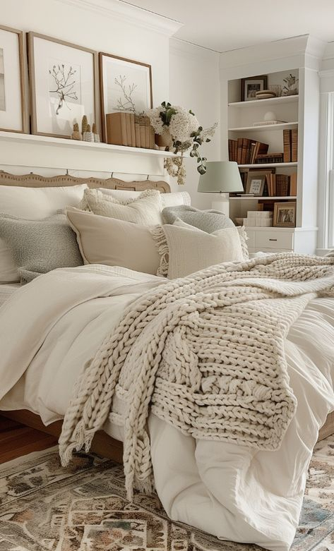
How I Would Build a White Farmhouse Room From Scratch
If I started with an empty room, I wouldn't buy everything at once.
I'd begin with the largest pieces.
Choose the wall color, flooring, sofa or bed, and main furniture first. Then introduce natural wood and textiles.
After that, I'd add vintage pieces and artwork.
Finally, I'd bring in smaller accessories.
This order prevents one common mistake: buying a bunch of cute farmhouse decorations before figuring out how the room actually functions.
For a living room, my basic formula would look something like this:
Warm white walls + comfortable neutral sofa + natural wood coffee table + vintage artwork + woven basket + linen pillows + greenery + one darker accent.
That's enough to establish the look without turning the room into a theme.
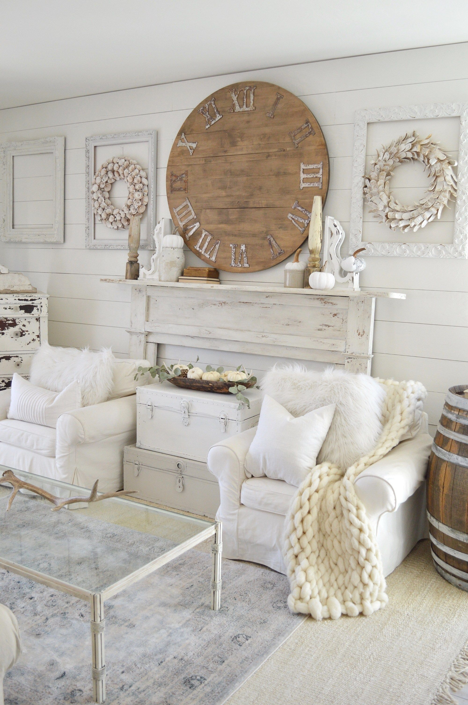
White Farmhouse Decor: What Should You Avoid?
The easiest way to improve farmhouse decor involves knowing when to stop.
You don't need every recognizable farmhouse element in the same room.
I'd be careful with:
- Excessive shiplap
- Too many distressed finishes
- Repetitive farmhouse signs
- Matching furniture sets
- Excessive black accents
- Fake vintage accessories
- Too many decorative objects
- Extremely cool white paint
Excessive shiplap and predictable farmhouse details can genuinely make the whole style feel dated fast.
The goal shouldn't involve creating a room that announces its decorating style from the doorway.
Instead, let someone walk in and think, "This feels really comfortable."
That reaction matters more.
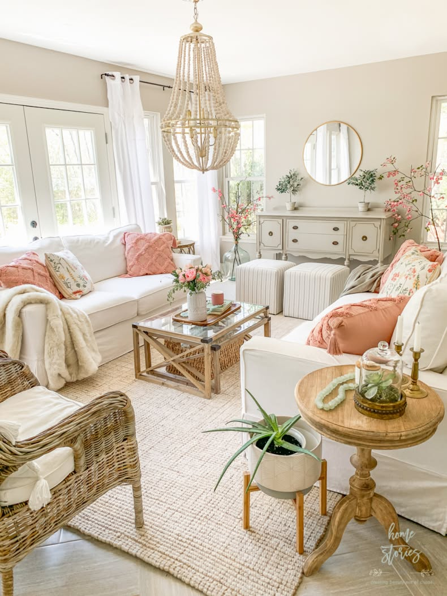
How to Keep White Farmhouse Decor From Looking Cold
White itself doesn't make a room cold.
The wrong combination of white, lighting, and materials does.
If your room feels sterile, look at the surrounding textures before repainting everything.
Add warmer materials first. Think:
- Natural wood
- Linen
- Wool
- Rattan
- Wicker
- Stone
- Aged metal
- Handmade ceramics
You should also pay attention to lighting.
Warm lamps can make creamy whites look beautiful at night, while cool bulbs can make even the warmest paint look clinical.
I prefer several smaller light sources instead of relying entirely on one ceiling fixture. A table lamp, floor lamp, wall light, and pendant can create much more depth.
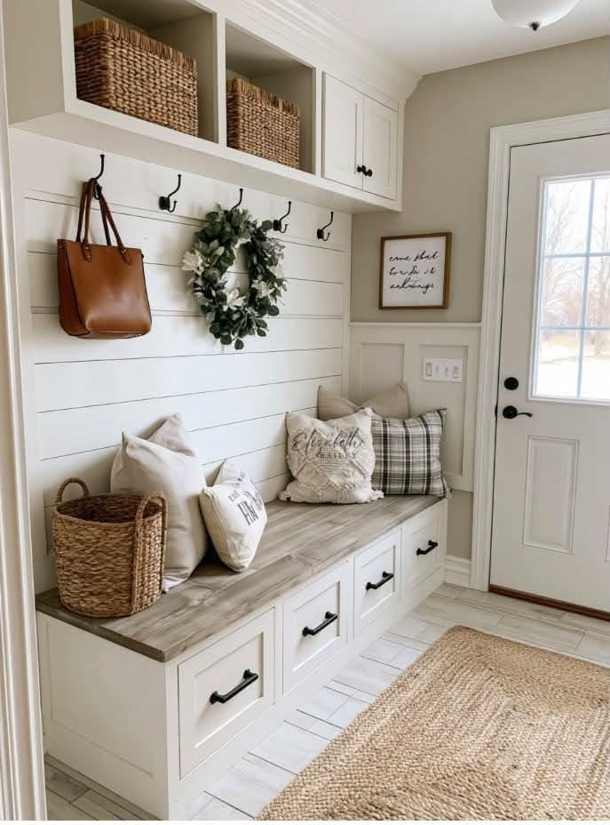
14 White Farmhouse Decor Ideas to Try
1. Mix Handmade and Imperfect Pieces
This might be my favorite white farmhouse decor idea.
Don't make everything perfect.
Use handmade ceramics. Choose an old wooden stool with visible wear. Keep the slightly uneven pottery. Display a vintage cutting board with scratches.
Those imperfections give the room personality.
The best farmhouse projects tend to embrace regional materials, antiques, layered textures, and the natural character of older homes rather than relying on predictable farmhouse clichés, picture spaces that feel collected, curated, and layered instead.
That approach makes sense to me.
A beautiful home shouldn't look like you decorated it in one afternoon.
It should look like you found things you loved over time.
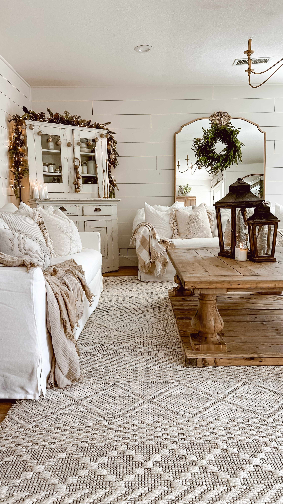
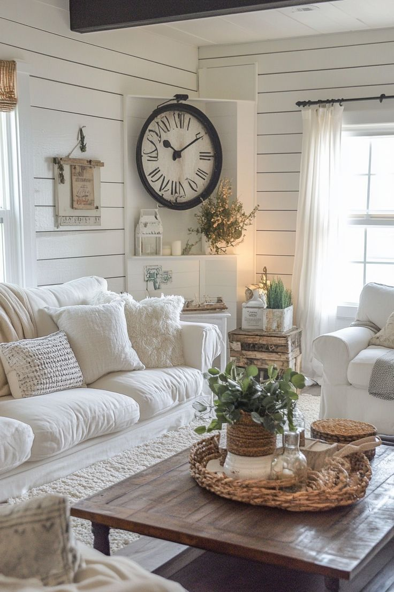
2. Use Greenery Instead of More Decor
Plants can completely change a white farmhouse room.
Green foliage provides a natural color contrast while keeping the palette calm.
Try olive branches, eucalyptus, herbs, trailing plants, or simple seasonal flowers.
For kitchens, I particularly like small pots of herbs near a window. They add color while actually serving a purpose.
You can also use branches in oversized ceramic pitchers for a more relaxed farmhouse arrangement.
The best part?
Plants don't need to match your sofa.
Finally, a decorating accessory with no opinion about your paint color.
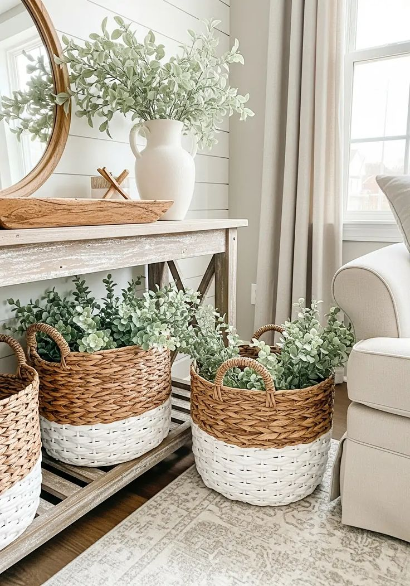
3. Add Natural Stone to White Farmhouse Decor
Stone gives white interiors something they desperately need: weight.
A limestone fireplace, stone backsplash, soapstone counter, terracotta floor, or even a small stone accessory can add earthy character.
Natural stone and wood repeatedly come up as important farmhouse materials generally.
You don't need a massive renovation to introduce it.
Try a stone tray, marble bowl, limestone lamp base, or rustic stone planter.
The slightly imperfect surface creates contrast against smooth white walls.
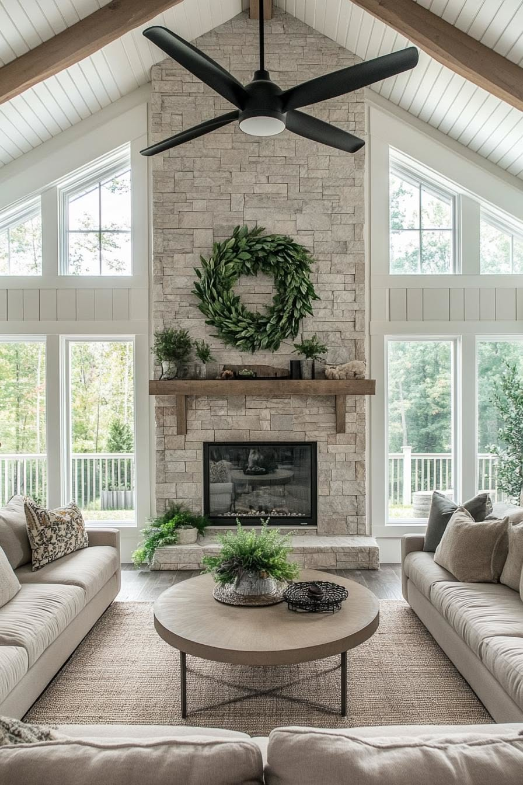
4. Use White Ceramics for Simple Farmhouse Styling
White ceramics work beautifully because they add subtle texture without introducing another strong color.
Look for handmade-looking pitchers, bowls, vases, candleholders, and serving pieces.
The slight irregularities make them feel more authentic.
I like grouping three pieces with different heights rather than scattering them around the room.
For example, place a tall ceramic pitcher beside a smaller bowl and a short candleholder.
The white-on-white combination creates a quiet layered effect.
And yes, technically you could buy another vase.
But do you need another vase?
Probably not.
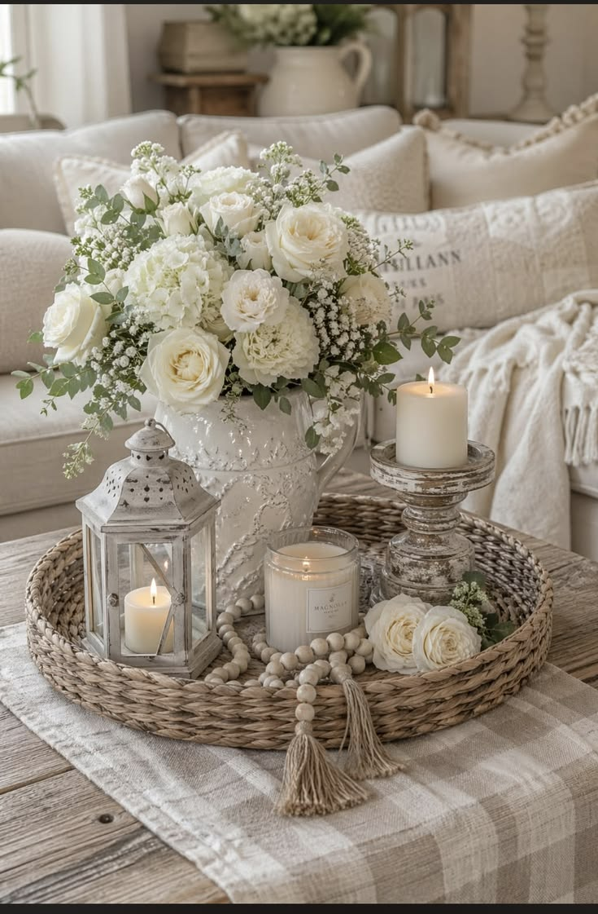
5. Add a Farmhouse-Inspired Entryway
Your entryway gives you a perfect opportunity to introduce the style without committing the entire house to it.
Try a simple white console with a natural wood mirror above it.
Then add a woven basket underneath, a small ceramic vase, and perhaps one vintage lamp.
That's enough.
You don't need a huge collection of accessories sitting on the console. The entryway should feel useful first and decorative second.
A little greenery can also soften the white palette and create a connection with the outdoors.
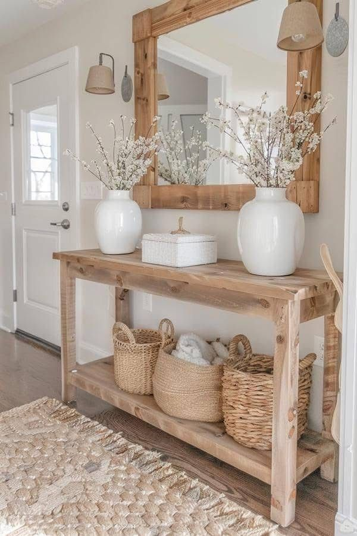
6. Use White Farmhouse Decor in the Bedroom
The bedroom might be the easiest place to experiment with this style.
Start with white or cream bedding and then build warmth through texture.
Layer:
- Linen duvet covers
- Chunky knit throws
- Woven pillows
- Natural wood nightstands
- Vintage lamps
- Soft neutral rugs
- Simple botanical artwork
Keep the color palette quiet.
You don't need six accent colors competing for attention when the goal involves creating a peaceful bedroom.
Soft neutrals, natural wood, layered linens, and earthy textures tend to get recommended for modern farmhouse bedrooms specifically.
I'd also leave a little empty space around the furniture. White farmhouse style works particularly well when the room can breathe.
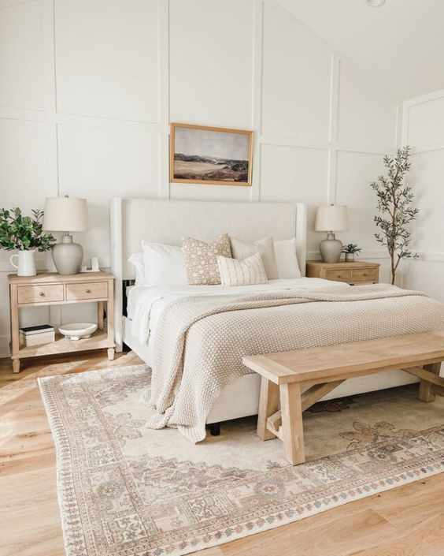
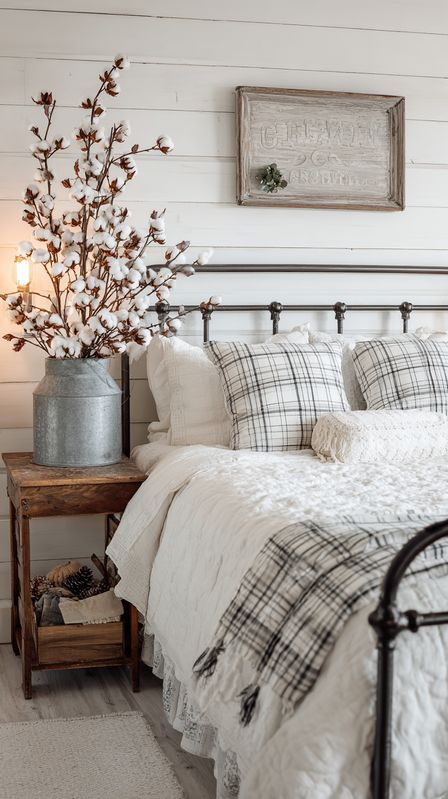
7. Mix White Furniture With Aged Wood
Matching furniture sets can make a room feel predictable.
Instead, mix finishes.
For example, pair a white console with a weathered oak mirror. Put a white upholstered chair beside a dark wooden side table. Place a pale farmhouse table with mismatched wooden chairs.
This old-meets-new approach keeps white farmhouse decor from feeling overly coordinated.
Mixing old and new is really a useful decorating formula generally for creating character and visual interest in a room.
I use this approach whenever a room starts looking too polished.
One imperfect vintage piece can completely change the mood.
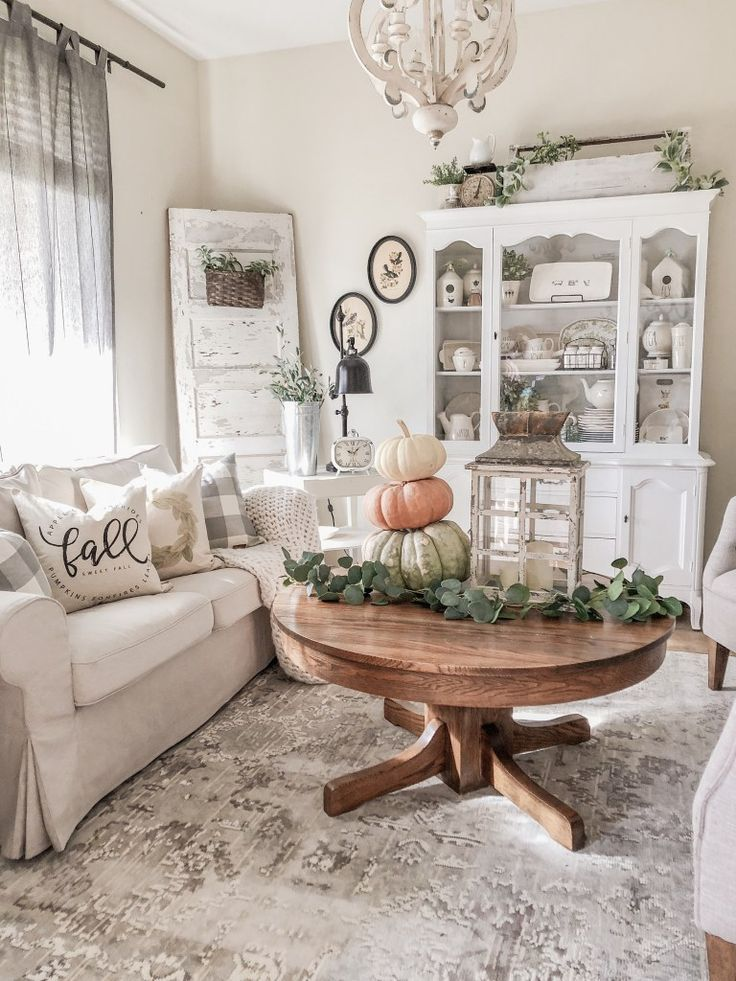
8. Decorate With Vintage Frames and Artwork
Your walls don't need another farmhouse quote.
Instead, look for vintage frames, botanical prints, landscapes, old architectural drawings, or simple black-and-white photography.
Antique frames and nature-inspired artwork tend to get recommended as strong farmhouse elements specifically. The modern farmhouse style really is earthy, shabby, and classic at its core, with vintage picture frames, artwork of nature, linen-covered beds, and earthy tones mixed with rustic woods.
A simple vintage landscape can give a white wall far more personality than a mass-produced decorative sign.
Try grouping three or four small frames together instead of hanging one giant piece.
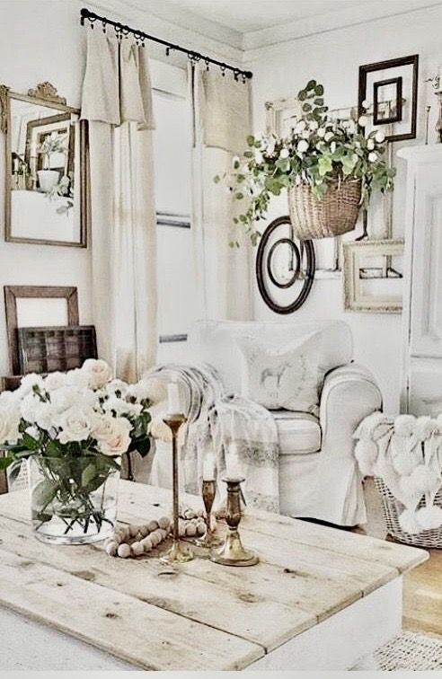
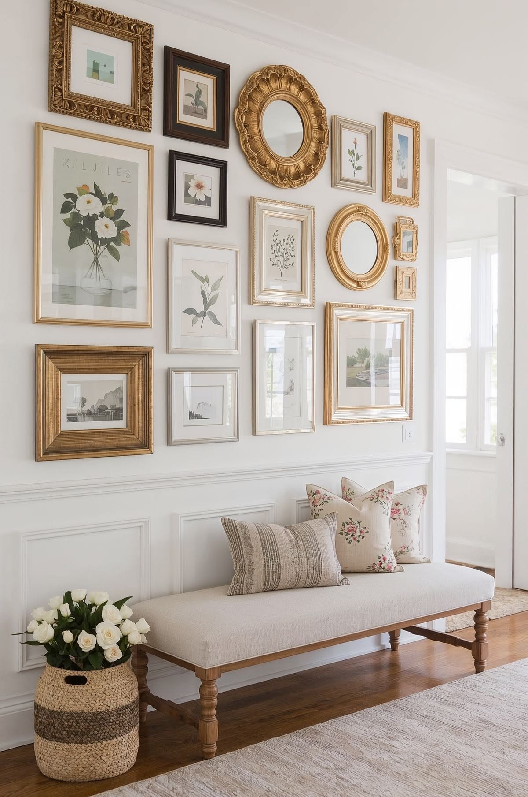
9. Add Black Accents for Contrast
White farmhouse decor can quickly become too soft.
That's where black comes in.
You don't need much. A black pendant light, window frame, cabinet hardware, picture frame, or fireplace screen can create enough contrast to keep the room visually interesting.
The trick involves small doses.
If you add black to every surface, you can quickly move away from the soft farmhouse feeling and toward a much more contemporary interior.
I usually prefer black hardware and lighting over large black furniture pieces because the smaller accents create definition without dominating the room.
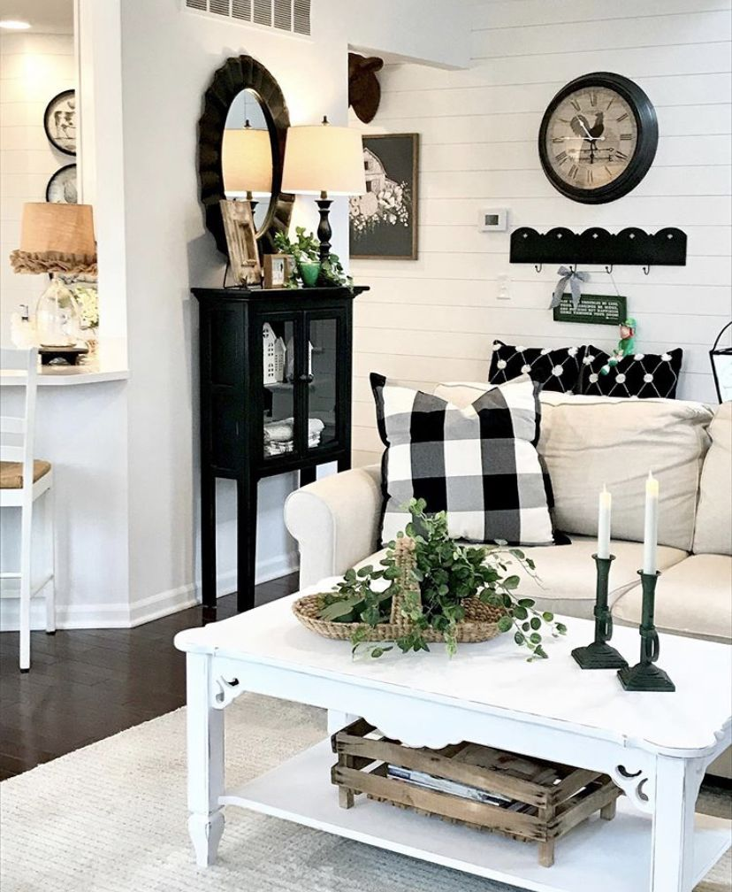
10. Create a White Farmhouse Kitchen With Vintage Details
A white farmhouse kitchen doesn't need to look brand new.
In fact, a little age can make it better.
Try pairing white cabinets with:
- Natural wood cutting boards
- Aged brass hardware
- Ceramic pitchers
- Wooden stools
- Vintage artwork
- Woven pendant lights
- Open shelving
- Stone or butcher-block surfaces
Plenty of farmhouse kitchens out there combine contemporary functionality with traditional materials and furnishings successfully.
I especially like adding one or two vintage pieces to an otherwise clean kitchen.
A small antique stool or old wooden cutting board can instantly make a new kitchen feel more established.
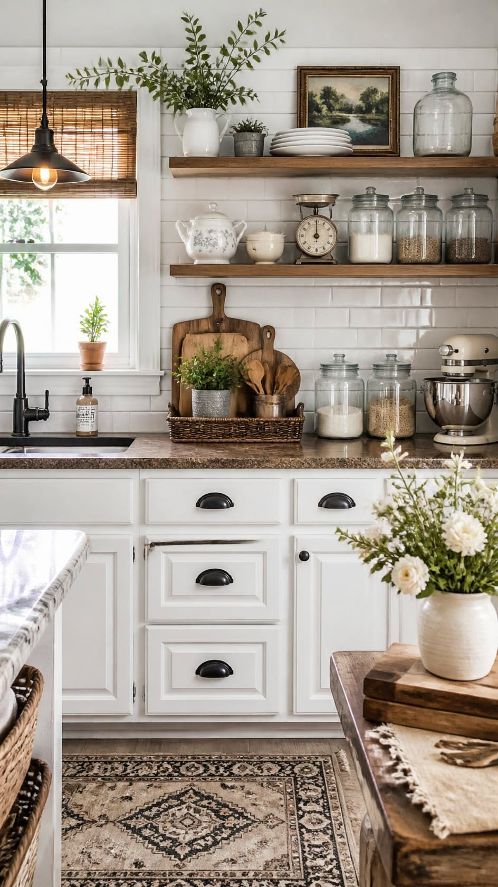
11. Bring in Woven Baskets
Woven baskets might be one of the easiest ways to add texture to white farmhouse decor.
They also serve an actual purpose, which fits the practical roots of farmhouse design.
Use large baskets for blankets, smaller baskets for bathroom storage, or shallow woven trays for coffee tables and consoles.
The natural tan color creates a gentle contrast against white walls and furniture.
I'd avoid filling every corner with baskets, though. One or two well-placed pieces usually look much more intentional than a basket collection that accidentally became your personality.
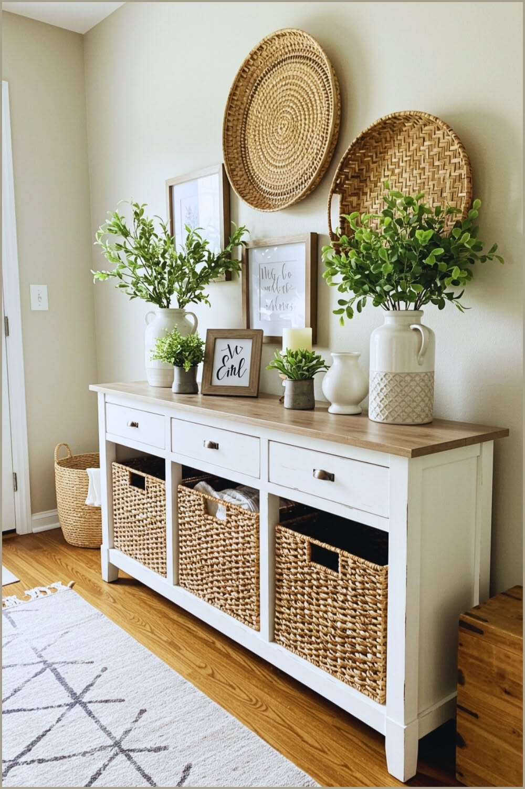
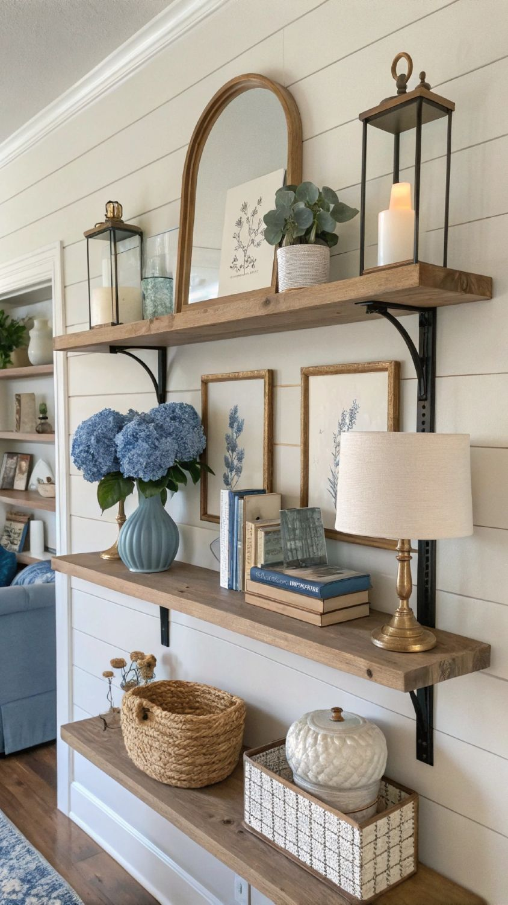
12. Use White Linen Everywhere It Makes Sense
Linen adds the softness that white-painted surfaces often lack.
Think linen curtains, slipcovered chairs, bedding, table runners, throw pillows, and relaxed upholstery.
The slight wrinkles actually help. You don't need to iron every curtain until it looks like it belongs in a showroom.
For a farmhouse bedroom, I love the combination of white linen bedding, a natural wood bed frame, a vintage rug, and simple ceramic lamps.
The room feels clean without feeling sterile.
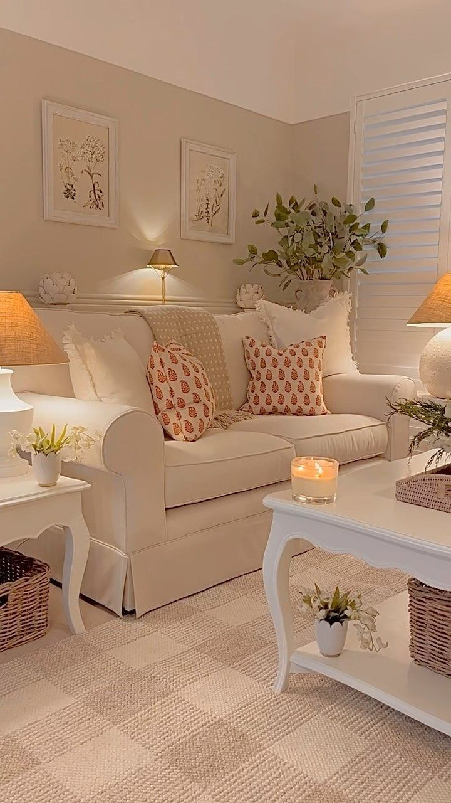
13. Add Warm Natural Wood to White Farmhouse Decor
If you only remember one idea from this article, remember this one.
White needs wood.
A white room with natural wood immediately gains warmth and visual weight. You don't need reclaimed barn wood everywhere, either. A simple oak coffee table can do more for a room than ten decorative farmhouse accessories.
Wood and stone frequently get highlighted as central materials in traditional farmhouse interiors generally.
I particularly like lighter oak with creamy whites because the combination feels relaxed rather than overly rustic.
Try a white living room with:
- A natural wood coffee table
- Oak shelves
- A vintage wooden bench
- Woven baskets
- Exposed wood beams
- A simple wooden dining table
And if you already have beautiful old wood in your house, don't automatically paint it white.
Seriously.
Sometimes the best white farmhouse decor idea involves not painting something.
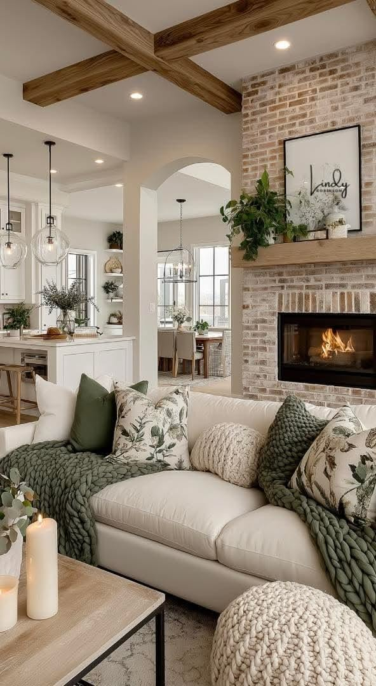
14. Layer Different Shades of White
This might sound almost too simple, but it makes a huge difference.
Instead of choosing one white and putting it everywhere, layer several related shades. Try a warm white on the walls, creamy upholstery, ivory curtains, and softer white bedding.
You can also introduce beige and pale taupe without losing the overall white farmhouse look.
I prefer warm whites because they work beautifully with wood and natural fabrics. Bright, cool whites can sometimes make rustic materials look harsher than they need to look.
Try combining:
- Warm white walls
- Cream upholstery
- Ivory linen
- Beige accents
- Natural oak
- Soft gray accessories
The result feels layered rather than monochromatic.
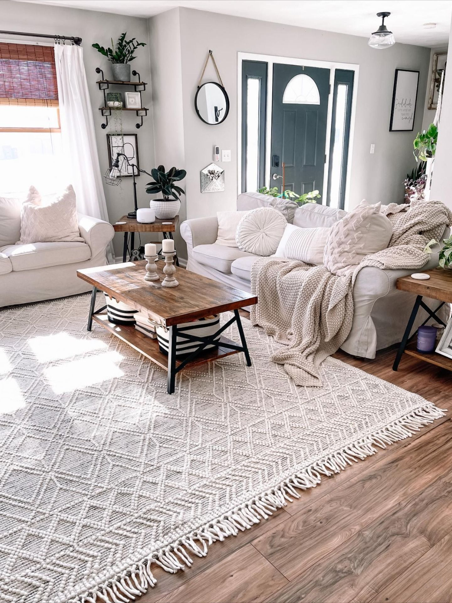
Is White Farmhouse Decor Still in Style?
Yes, but I'd approach it differently than the classic modern farmhouse look that dominated Pinterest and home renovation shows for years.
The overly predictable version relied heavily on white walls, black windows, shiplap, distressed wood, industrial lighting, and farmhouse signs. More designers these days are pushing back against using those elements in excessive or formulaic ways, since authentic farmhouse design is really much more complicated than just doing black windows and a white house.
That's exactly how I think about white farmhouse decor now.
Keep the lightness, but bring in character.
Use old wood instead of fake distressed wood. Choose a vintage frame instead of another "Gather" sign. Add linen, stone, woven baskets, ceramics, and greenery. Suddenly the room feels like someone actually lives there.
And thankfully, your walls can finally breathe.
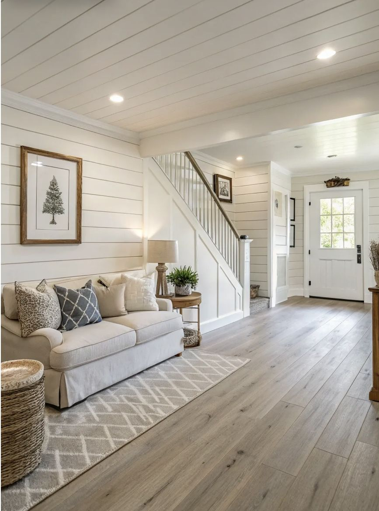
What Makes White Farmhouse Decor Feel So Warm?
The secret to good white farmhouse decor doesn't sit in the paint bucket. It comes from texture, contrast, natural materials, and imperfections.
Farmhouse style really comes down to a combination of practicality, comfort, simplicity, natural materials, vintage elements, and neutral palettes. Modern farmhouse design adds cleaner lines and a more contemporary feel to those traditional ingredients, think tonal palette, natural materials, and textures galore. That approach sums up the whole philosophy pretty well.
I especially like the idea of using different shades of white rather than forcing every surface into the exact same color. Creamy white walls can sit beautifully beside ivory linen, white ceramics, warm oak, and slightly darker beige fabrics.
Why does that work?
Because your eye gets something to explore.
A white room needs variation. Without it, even an expensive space can look unfinished.
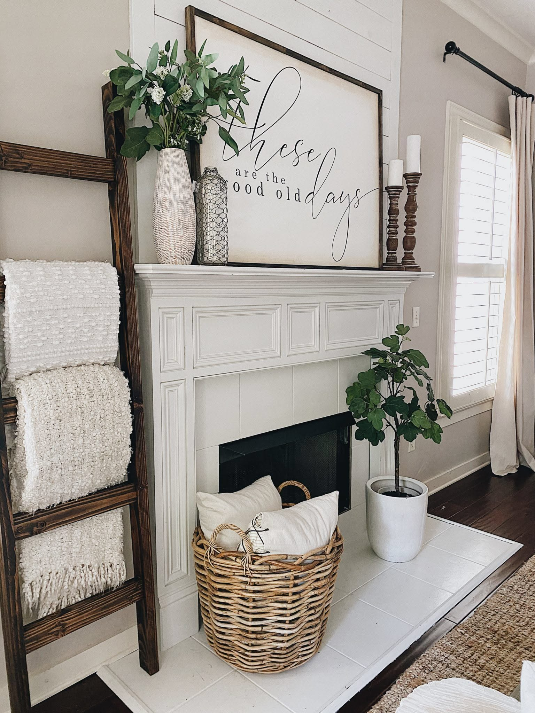
Final Thoughts on White Farmhouse Decor
The best white farmhouse decor ideas don't depend on filling your home with farmhouse labels. They rely on a simple combination of warm whites, natural wood, vintage pieces, soft textiles, greenery, handmade details, and thoughtful contrast.
Start with a calm white foundation.
Then add warmth.
Bring in texture.
Mix old with new.
Keep a few imperfections.
And most importantly, resist the urge to decorate every empty surface just because it exists.
A beautiful farmhouse-inspired home should feel relaxed, comfortable, and collected. It should give you that cozy country feeling without making you feel like you accidentally walked into a furniture showroom.
So if you're standing in your living room wondering what it needs, don't immediately reach for another decorative sign.
Maybe it needs a wooden table.
Maybe it needs softer lighting.
Maybe it needs a vintage frame.
Or maybe it needs absolutely nothing.
Sometimes leaving a little space is the most farmhouse thing you can do, more so than anything you could actually go out and buy this weekend.